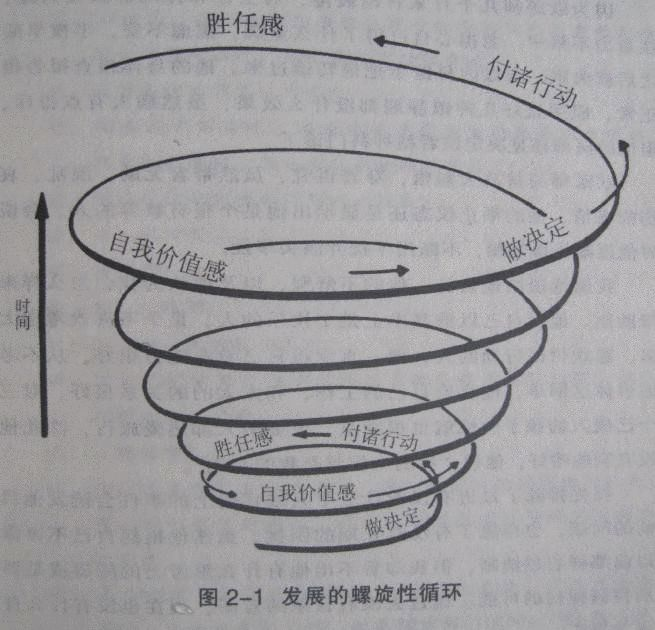

那我们来看一下更好的一种成长观是什么样的呢
格兰汀Temple Grandin四岁的时候患有高功能自闭症(即阿斯伯格综合症)，什么都不会说。但是她的父母亲都没有放弃，但是在学校他也是很多挫折，语言性科目都读不了的，这个电影叫自闭历程。她语言能力很差，但是她的空间想象能力很好，她在高中的时候遇到一个改变她一生的一个科学老师。影片中有一段主要讲了她做了什么，大家可以看一下。提醒大家一点，老师知道她空间能力很好，鼓励她去尝试做出这个模型，老师没有给她任何指点，直到她第一次失败的时候，他还是没有给出指导，直到最后老师才给了她一点提示，就是让她考虑屋顶跟地板，她最后才成功做出了这个视错觉模型，做到了其他人做不到的事，给了她很大的信心。试想如果她第一次失败去请教老师，老师就告诉她怎么做的话，她做成功还会如此有成就感有自信心吗？很显然不会的。
所以我们得出一个结论，如果我们要培养孩子真正的自信心的话，我们给他必要但尽可能少的帮助。就像里面的科学老师一样。最后这种成就感才会给孩子自信。格兰汀后来越来越自信，因为她觉得她能够做到全班同学做不出来的视错觉模型。她后来考上了大学，又读了研究生，又读了博士，现在是一所大学的教授，她的这个例子对世人产生巨大的影响。北美将近50%以上的畜牧设施采用她的设计！这是她独特的设计。
我们怎么样才能给孩子自信呢？不是靠维护他的自信，而是要他通过自己的努力获得的成就中得到最可靠最稳定的自信心。
我们提倡的是什么样的成长观呢？希望大家记住这个图

她在高中的时候自信心还是很差的，基本上是在这个圈的底层的。如果她的那个高中科学老师批评打击他，他根本不会走到现在的这个状态。等到他后面自信越来越多的在增长，现在的他敢于尝试，不断地作出努力，到了十年后，她已经在最上面的这个圈了。他能做的事情远远跟十年前不一样。这是一个有机的发展模型，所以我说那个机械发展的那个模式是错的，会让孩子觉得自己再努力就是笨了，就像乌龟一样。其实我们应该传递的是有机的发展模型。不管是爱迪生，格兰汀还是台湾的王永庆都是这个样子，怎么可能十年前他做的事这个样子，十年后还是一样呢，这个会让孩子觉得努力使没有用的。那其实努力可以给我们的生活带来巨大改变，因为她是螺旋上升的，到后面空间越来越大，半径越来越大，自己可以以拓展的范围也越来越大。这是非常有价值的，对孩子来说努力可以带给他巨大的成长，如果是这样子的话，他为什么不去努力呢。所以我要说我们传统的一些东西会给我们造成一些误区，所以让我们的孩子不愿意去选择做那种老老实实的一步一步爬的乌龟。